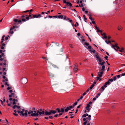
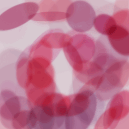
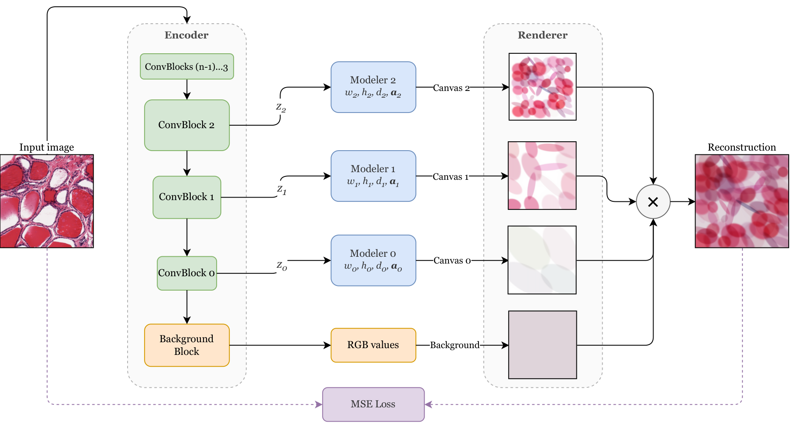
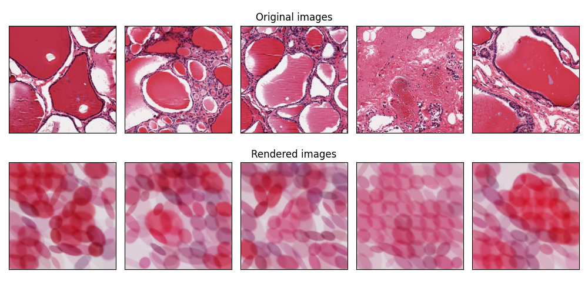
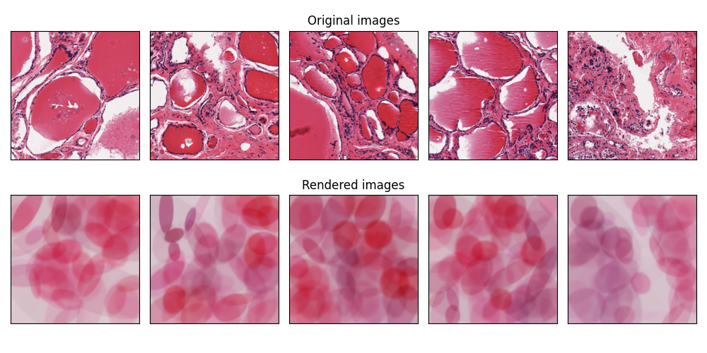
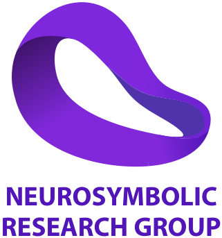

ASR
Autoassociative Learning of Structural Representations for Modeling and Classification in Medical Imaging
Institute of Computing Science, Poznan University of Technology


Abstract
Deep learning architectures based on convolutional neural networks tend to rely on continuous, smooth features. While this characteristics provides significant robustness and proves useful in many real-world tasks, it is strikingly incompatible with the physical characteristic of the world, which, at the scale in which humans operate, comprises crisp objects, typically representing well-defined categories. This study proposes a class of neurosymbolic systems that learn by reconstructing images in terms of visual primitives and are thus forced to form high-level, structural explanations of them. When applied to the task of diagnosing abnormalities in histological imaging, the method proved superior to a conventional deep learning architecture in terms of classification accuracy, while being more transparent.
Method
ASR (Auto-associative Structural Representations) is an autoencoder whose decoder is a fixed, differentiable renderer instead of a learned network. A convolutional encoder processes the image, and at three depths a modeler reads the feature map and predicts one ellipse per cell of a regular grid: 8 × 8, 4 × 4 and 2 × 2 ellipses with spacings of 32, 64 and 128 px. Each ellipse has a width w, a height h, a rotation d and an RGB appearance a. A background block predicts one background colour.
The renderer draws each scale on its own canvas and multiplies the canvases with the background into the reconstruction. The model is trained only to minimise the reconstruction error, so it has to explain every image with a small set of interpretable shapes.

From reconstruction to diagnosis
-
1
Reconstruction. The encoder is trained on unlabelled patches, using reconstruction alone. Three variants are studied: Base; Regularized, which adds a penalty that encourages switching unneeded ellipses off; and Incremental, which brings in the finer scales gradually during training.
-
2
Classification. Patches of each slide are grouped into bags of 16. The mean and standard deviation of every ellipse parameter at every scale give 36 named features per bag. A decision tree classifies the bag as Benign, Hashimoto or Nodularity.
Reconstructions
Test patches (top rows) and their reconstructions (bottom rows). The model captures the layout of colloid-filled follicles, the pink-red colloid and the purple cellular tissue using ellipses only.


Highlights
- 77.7%best test accuracy of ASR on three-class thyroid diagnosis, against 53.8% for a conventional convolutional autoencoder
- 36 featuresper bag, each with a meaning (for example, the mean height of mid-scale ellipses), compared with 200 opaque latent dimensions for the baseline
- 7 leavesin the best decision tree, small enough to read every decision path
All three ASR variants outperform the baseline in every run. See the paper for the full results and an analysis of which scales the trees rely on.
Code
The repository contains the encoder, renderer and training code for all three variants, the autoencoder baseline, bag-feature extraction and the decision-tree pipeline. One config file per model reproduces the paper's settings.
git clone https://github.com/neurosymbolic-research-group/ASR.git && cd ASR
uv sync
uv run asr-train --config configs/base.yaml --run base
uv run asr-test --config configs/base.yaml --run base
uv run asr-features --config configs/base.yaml --run base
uv run asr-classify --config configs/base.yaml --run baseCitation
@misc{buchnajzer2024asr,
title={Autoassociative Learning of Structural Representations for Modeling and Classification in Medical Imaging},
author={Zuzanna Buchnajzer and Kacper Dobek and Stanisław Hapke and Daniel Jankowski and Krzysztof Krawiec},
year={2024},
eprint={2411.12070},
archivePrefix={arXiv},
primaryClass={cs.CV},
url={https://arxiv.org/abs/2411.12070},
}
Neurosymbolic Research Group
ASR is developed by the Neurosymbolic Research Group at Poznan University of Technology.